地政学
広州は珠江デルタの北側に位置し、香港、深圳、マカオ、東南アジアへ開く南中国の省都である。国家の対外貿易、湾区政策、内陸からの人口移動が交差し、港湾、空港、鉄道が華南を世界市場へつなぐ結節点だ。外交も映す。

🇨🇳 中国 / アジア / World City Atlas
珠江デルタの北端で交易、製造、広東語文化、飲茶、移民労働、城中村、国際見本市を結び、香港・深圳・東南アジア・アフリカを見渡す南中国の中枢都市。
都市の骨格
広州は中国南部の省都であり、古い海上交易、現代の見本市、デルタの工場群、地下鉄網、飲茶の生活文化が重なる都市である。都心の高層化と旧市街の密度が、地域経済の厚みを示す。
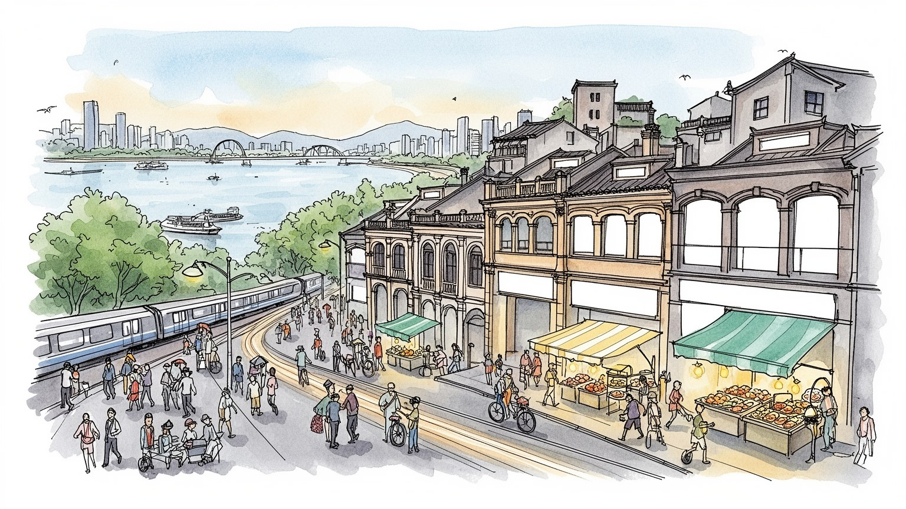
広州は珠江デルタの北側に位置し、香港、深圳、マカオ、東南アジアへ開く南中国の省都である。国家の対外貿易、湾区政策、内陸からの人口移動が交差し、港湾、空港、鉄道が華南を世界市場へつなぐ結節点だ。外交も映す。
広交会、卸売市場、自動車、電子、アパレル、物流、金融、ITが雇用を広げる。周辺都市の工場、都心の事務職、城中村のサービス労働が近く、移民労働者と専門職が同じ地下鉄網を使う生産都市である。現場の層も厚い。
広東語、粤劇、飲茶、寺院、祖先祭祀、キリスト教会、イスラム商人の記憶が都市文化を作る。北京語化と再開発が進んでも、茶楼、市場、祠堂、路地の会話に地域の声が残り、家族と商いを結んでいる。暮らしに深い。
観光客は珠江夜景、陳家祠、沙面、飲茶、市場、高層街区を巡るが、住民には住宅費、湿暑、通勤、教育、医療、洪水対策が日々の条件になる。旧市街と新区を行き来する時間が、広州の生活感を形作る。水辺も近い。
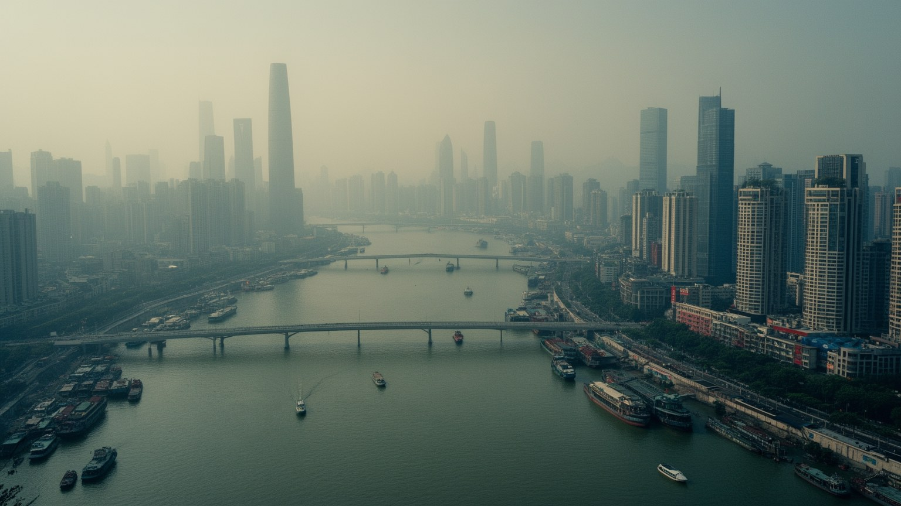
広州の都市骨格は、珠江の本流と支流、低いデルタ地形、内陸へ伸びる鉄道と高速道路によって作られている。古くからこの街は華南の物産を水路で集め、海へ出す場所であり、現在も香港、深圳、東莞、仏山、珠海、マカオを含む巨大な都市圏の北側の核である。都心の珠江新城は金融と行政の顔を持つが、川をたどると古い倉庫、橋、住宅地、大学、工場跡、湿地、港湾施設が連なり、広州が単独の点ではなくデルタ全体の流れで動く都市だと分かる。地理的な強みは市場への近さだけではない。内陸省から来る労働者、輸出入の貨物、香港の金融や法律サービス、深圳の技術産業、東南アジアへの商流がここで重なり、広州は南中国の言語、物流、行政を調整する場所になる。一方で水辺の都市は洪水、高潮、排水、湿気、熱への備えを欠かせない。橋と地下鉄は日々の通勤を支え、川辺の遊歩道は余暇の風景になるが、低地の開発は気候リスクを増やす。埋め立てや護岸の変化は、水辺の公共空間を広げる一方、かつての船着き場や漁村の記憶を見えにくくする。水路の名前をたどると、都市が交易だけでなく農村、湿地、河口の生態にも支えられてきたことが分かる。岸辺の公園も生活の距離を測る。広州を読むには、広州塔の夜景だけでなく、川が運んできた商品、人、制度、雨水を同じ地図に置く必要がある。
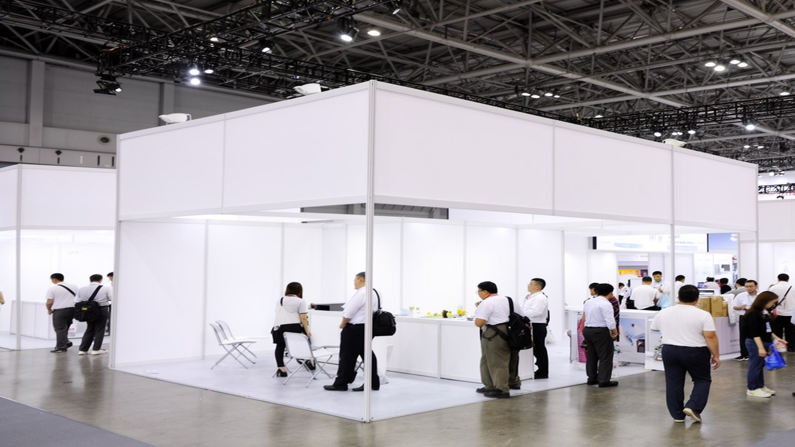
広州の国際性を象徴する制度が、中国輸出入商品交易会、いわゆる広交会である。家電、機械、家具、照明、工具、繊維、生活雑貨まで多様な商品が並び、世界中の買い手がサンプルを見て、価格、納期、品質、物流、決済を交渉する。広交会は華やかな展示会であるだけでなく、中国の工場群と世界の小売、建設、家庭、修理業をつなぐ実務の場である。会期中のホテル、通訳、レストラン、交通、印刷、配送、検査会社、金融機関は一斉に忙しくなり、都市全体が商談のインフラとして働く。オンライン取引が広がっても、実物を触り、相手の反応を見て、工場訪問の予定を組む場の価値は残る。広州の交易を読むには、会場の大きさだけでなく、名刺を交換する小規模商社、夜に見積もりを作る担当者、空港へ向かう買い付け客、港へ出るコンテナを見る必要がある。広交会は国家の輸出政策と民間の商才が接する場でもあり、為替、関税、制裁、感染症、海運運賃の変化がすぐ商談に響く。成功の裏側には長時間労働、品質トラブル、価格競争、在庫リスクもある。通訳や検品の仕事は、異なる商習慣をつなぐ柔らかい制度でもある。小さな注文も次の大きな取引につながる。それでも広州が世界の商人に覚えられてきたのは、商品を並べるだけでなく、見て、比べて、交渉し、次の工場へ向かえる都市の厚みを持つからである。
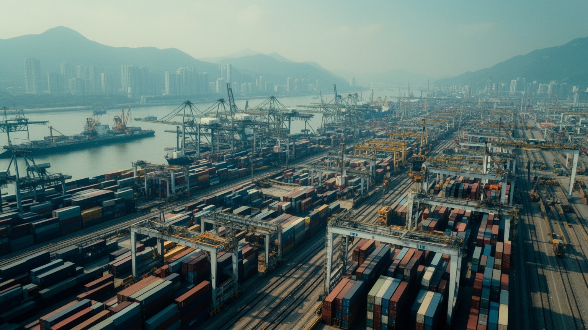
広州の経済は都心の高層ビルだけでなく、珠江デルタ全体に広がる製造業の網で動いている。自動車、部品、電子、家電、化学、食品、アパレル、家具、物流、研究開発、卸売市場が互いに近く、発注、試作、調達、検査、出荷を短い時間で回せることが強みである。広州自身にも自動車産業や先端サービスがあり、周辺の仏山、東莞、中山、深圳と役割を分けながら、工場、倉庫、展示会、金融、設計、大学を結んでいる。労働市場は多層的だ。高学歴のエンジニアや管理職がいる一方、工場のライン、配送、清掃、飲食、警備、修理、夜市、家事労働に従事する移民労働者が都市を支える。景気の変動、輸出規制、自動化、賃金上昇は、企業の場所選びと家計の選択を変える。製造業の高度化は賃金を上げる可能性を持つが、低技能の仕事を減らすこともある。広州を生産都市として読むには、工場の煙突だけでなく、設計事務所、部品市場、職業学校、物流センター、寮、食堂、求人広告を見る必要がある。製品はコンテナで外へ出るが、働く人の生活は住宅、子どもの教育、医療保険、戸籍制度、帰省の列車に結びついている。近年は国内消費向けの商品企画や越境ECも増え、単なる輸出加工地ではない顔が強まった。デルタの競争力は速い供給網だけでなく、労働者が都市に定着できる制度をどこまで作れるかにもかかっている。
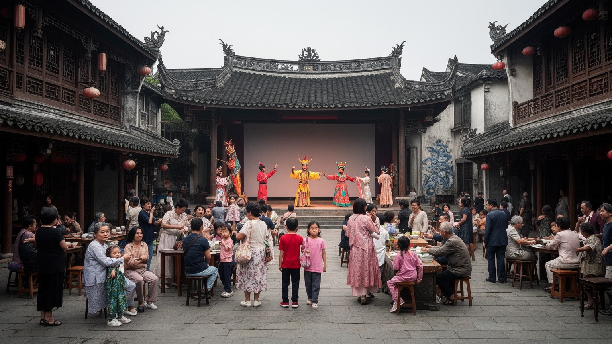
広州は広東語文化の中心都市であり、言葉、食、演劇、笑い、商いの作法が街の性格を作ってきた。広東語は香港や海外華人社会ともつながり、映画、音楽、テレビ、粤劇、家庭の会話を通じて広い文化圏を形成している。北京語が学校、行政、全国市場で強まる中でも、茶楼の注文、露店の呼び声、近所の挨拶、古い歌には広州らしいリズムが残る。文化は博物館だけにあるのではない。祠堂、寺院、路地の祭礼、祖先を敬う行事、旧正月の準備、店先の赤い飾り、家族の食卓が、地域の記憶を日常に保っている。広州の歴史には仏教、道教、民間信仰、キリスト教、イスラム商人の足跡もあり、交易都市としての開放性は信仰と暮らしの層に表れる。再開発で古い街区が変わると、建物だけでなく、言葉が響く場所や親族の集まり方も変化する。若い世代は標準語、広東語、英語、インターネットの言葉を使い分け、地域性を新しく表現している。学校や職場では全国共通の言語が便利でも、家庭の冗談や市場の駆け引きでは土地の言葉が関係を近づける。広東語文化を読むことは、懐旧だけではなく、多言語の都市が全国統合と地域の自尊をどう両立させるかを見ることでもある。地元の笑いも街の記憶を運ぶ。声も残る。広州の魅力は、巨大都市でありながら、茶を注ぐ声や芝居の節回しに土地の時間が残る点にある。
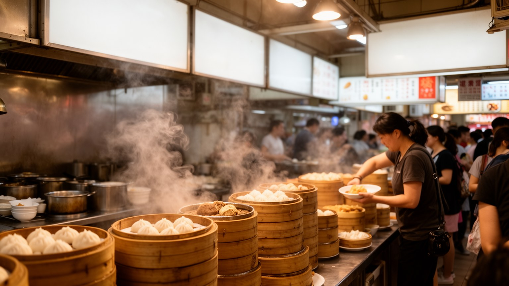
広州の生活を最も近くで感じられる場所は、茶楼、市場、路地の食堂である。朝の飲茶では、点心を載せた蒸籠、粥、腸粉、焼味、甘い菓子、濃い茶がテーブルを埋め、家族、友人、商談相手、近所の常連が同じ時間を過ごす。食は観光の名物である前に、会話、親族関係、商売の信用、休日のリズムを作る社会的な場である。市場には野菜、果物、魚介、肉、乾物、漢方素材、調理器具が並び、家庭の台所と地域経済をつなぐ。都市が高層化しても、食材を選び、値段を聞き、顔なじみの店で買う行為は、住民が街を自分のものとして感じる大切な回路である。一方で食品安全、家賃上昇、衛生規制、古い市場の移転、観光化は、庶民的な食の場所を揺らす。人気店が増えれば地元の誇りになるが、日常の食堂が消えると、都市の手頃さも失われる。広州の食を読むには、高級レストランだけでなく、早朝の仕入れ、厨房の長時間労働、配達員、清掃、家族経営の小店、学校帰りの軽食を見る必要がある。料理の繊細さは、港から来る材料、周辺農村の供給、移民の味覚、商人の時間感覚と結びついている。茶楼の席を取る習慣や、相手の茶を注ぐしぐさにも、年長者への敬意と商都らしい社交が表れる。季節の食材も会話を変える。味も残る。飲茶のゆっくりした時間と、卸売市場の速い取引は、同じ都市の呼吸である。
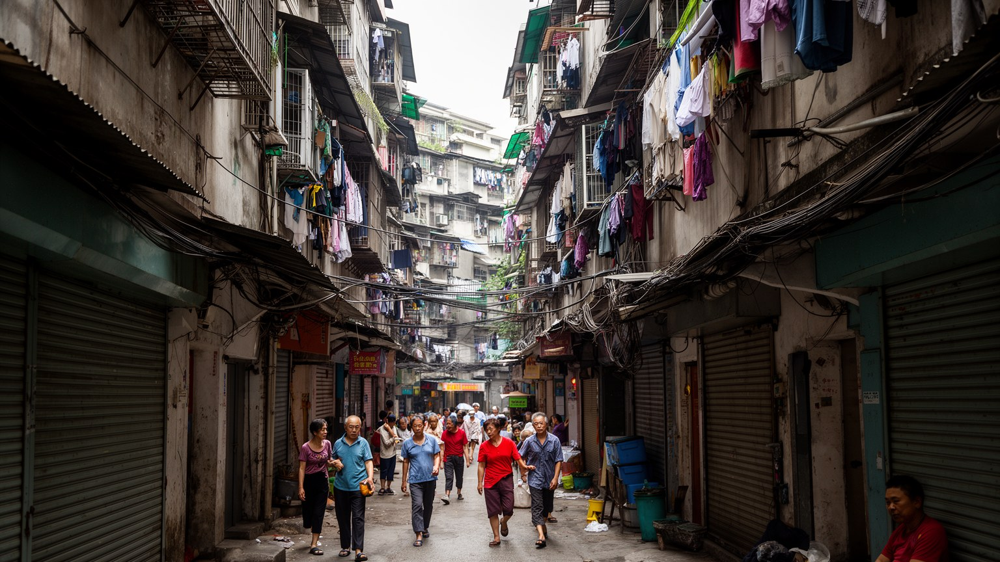
広州の急成長を支えてきた見えにくい基盤が、城中村と呼ばれる都市内の村落である。もともとの農村集落が周囲を市街地に囲まれ、細い路地、密集した賃貸住宅、小さな食堂、修理店、携帯店、物流拠点、民宿、寮のような住まいが重なる。ここは都市の景観としては雑然として見えるかもしれないが、内陸から来た労働者、若い起業家、学生、低賃金サービス職にとって、都心に近く比較的安い住まいを提供してきた。戸籍制度の壁、住宅価格の高騰、正規賃貸の保証金は、多くの人にとって重い。城中村は安全、採光、消防、衛生、過密の問題を抱える一方、職場に近く、同郷者のネットワークがあり、食事も安い。再開発は住環境を改善する可能性があるが、家賃を上げ、店と住民を遠くへ押し出す危険もある。広州の住宅を読むには、新区の高層マンションだけでなく、路地の洗濯物、夜の屋台、送迎バイク、仕送りを考える若者、家主と借り手の交渉を見る必要がある。都市の成長はきれいな外観だけでは測れない。どれだけ多くの人が働く場所の近くに住み、医療や学校へアクセスし、将来を計画できるかが重要である。小さな部屋に住むことは不安定さを意味するが、同時に店を始め、仕事を探し、都市に足場を置く入口にもなる。城中村は問題の集合であると同時に、広州が移民を受け入れてきた現実の住まいでもある。
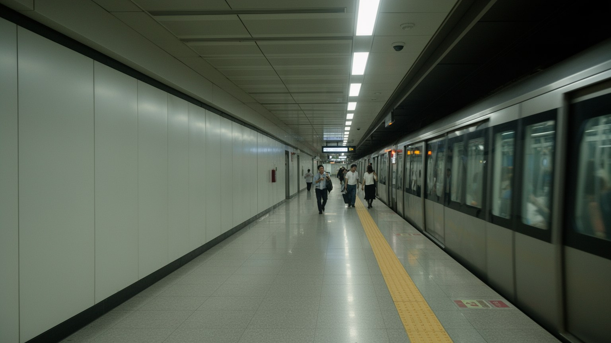
広州の規模を日常生活の中で実感させるものが、急速に広がった地下鉄網である。都心の業務地区、古い商業地、大学、鉄道駅、空港、郊外住宅地、工業地区が鉄道で結ばれ、通勤、通学、買い物、病院、観光の距離感を変えてきた。地下鉄は渋滞を避ける実用的な交通手段であると同時に、駅前の土地利用を変え、ショッピングモール、オフィス、マンション、ホテルを引き寄せる開発装置でもある。朝夕の混雑は都市の労働リズムを映し、乗り換えの長さや終電の時間は働き方を制約する。広州南駅から高速鉄道に乗れば、深圳、香港、武漢、長沙、北京方面へ広がる移動網にもつながる。だが公共交通が発達しても、郊外の職場や城中村の細い路地、深夜の勤務、子どもの送迎、高齢者の通院には、バス、徒歩、自転車、配車サービスが欠かせない。移動の公平性は路線図の長さだけでなく、駅までの歩道、日陰、エレベーター、運賃、混雑時の安全で決まる。広州を交通都市として読むには、きれいな駅舎だけでなく、雨の日の改札、地下通路の商店、配達員の待機場所、郊外バス停の列を見る必要がある。鉄道は都市を一つに見せるが、実際の生活時間は職種、住宅、家族の事情によって大きく違う。乗換駅の混雑や駅前の家賃は、便利さが新しい負担を生むことも示す。移動の網は成長を支えると同時に、誰が都市の機会に近づけるかを決める。
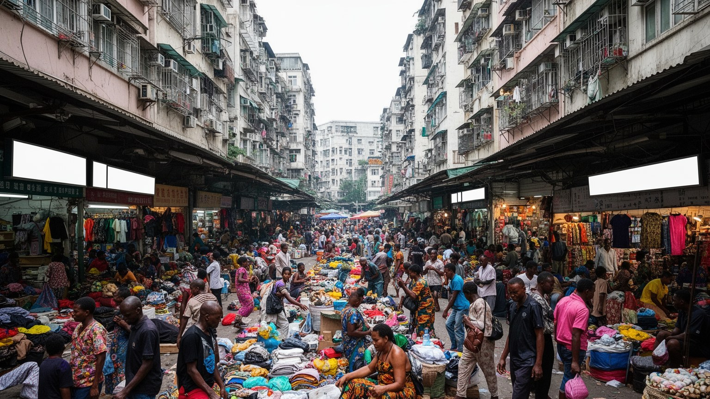
広州は中国とアフリカを結ぶ商流の重要な接点としても知られている。小北や三元里周辺には、アフリカ各地から来た商人、留学生、仲介業者、通訳、物流会社、飲食店が集まり、衣料、靴、携帯部品、雑貨、建材を買い付けてラゴス、ナイロビ、アクラ、ダルエスサラームなどへ送る取引が行われてきた。ここでの国際性は大企業の会議室だけでなく、卸売店の棚、ホテルの廊下、送金窓口、荷造りの倉庫、食堂のテーブルに現れる。アフリカ商人は広州の市場価格、工場の場所、品質交渉、船便、通関を学び、自国の小売と消費を変えてきた。一方で在留資格、警察の取り締まり、差別、感染症時の偏見、言語の壁、家賃、宗教実践の場所は深刻な課題にもなる。広州のアフリカ交易を読むには、単に外国人街として見るのではなく、グローバルサウス同士の商売がどのように都市の路地で成立するかを見る必要がある。小口の買い付けは巨大企業より不安定だが、家族経営の店や地域市場を支える柔軟さを持つ。商人はリスクを背負いながら、価格差、信用、親族網、航空券、コンテナを使って世界をつなぐ。宗教食や礼拝の時間を守れる店も、異郷で商売を続けるための大切な支えになる。広州に残る人も帰国する人も、都市の記憶を商売の言葉として持ち帰る。ここには中国の対外関係を国家間外交だけでは捉えられない、生活に近い国際都市の姿がある。
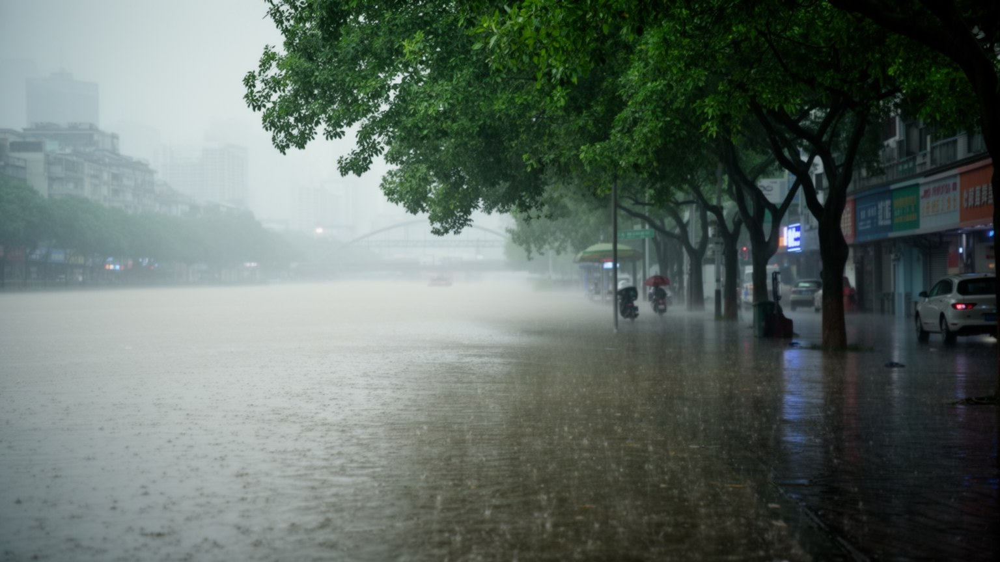
広州の気候は、高温多湿の長い夏、短い冬、激しい雨、台風の影響によって特徴づけられる。湿った暑さは屋外労働、通勤、学校、観光、食品管理、医療に影響し、冷房と電力需要を大きく押し上げる。珠江デルタの低地にあるため、豪雨、内水氾濫、河川水位、高潮、排水能力は都市の安全を左右する。高層ビルや地下鉄、地下商業施設が増えるほど、水の侵入と避難計画は重要になる。気候リスクは誰にも同じようには届かない。日陰の少ないバス停で待つ人、配達員、建設労働者、古い住宅に住む高齢者、城中村の密集住宅、低地の小商店は、暑さと水害により脆弱である。緑地、透水舗装、排水管、ポンプ場、避難情報、住宅の断熱、職場の休憩制度は、景観整備ではなく生活を守るインフラである。広州の環境を読むには、川辺の美しい夜景と同時に、豪雨の日の地下通路、濁った道路、冷房費、熱中症対策、食品市場の衛生管理を見る必要がある。気候変動が進めば、都市の競争力はGDPだけでなく、熱と水を管理する能力に左右される。強い雨の後にどの地区が早く回復し、どの労働者が危険を負うのかは、公平性の問題でもある。公共施設や学校が涼しさと避難の場所になれるかも、これからの都市政策の焦点になる。広州の未来は、成長の速度を保ちながら、水辺の都市としての弱さを正面から扱えるかにかかっている。
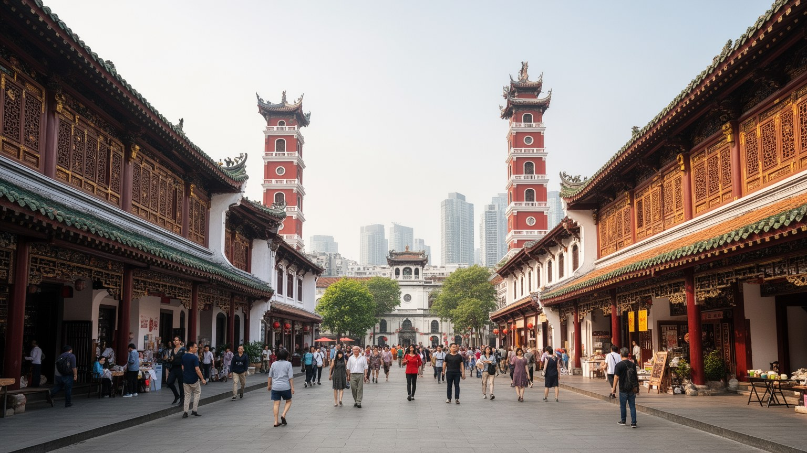
広州の歴史は、南越の記憶、海上交易、十三行、清末の開港、革命運動、植民地的な租界の影、社会主義建設、改革開放、現代の湾区政策まで幾重にも重なっている。沙面の洋風建築、陳家祠の精緻な装飾、越秀の歴史公園、寺院、旧市街の騎楼は、外との接触と地域文化が交差した時間を伝える。一方、珠江新城や琶洲の展示会地区、広州塔、高速鉄道駅は、広州が現代中国の成長を示す舞台であることを強く印象づける。問題は、古いものと新しいものが単純に対立しているわけではない点である。歴史地区は観光資源になるが、住民の生活、修繕費、家賃、商店の継続、消防安全、交通と結びついている。保存が外観だけにとどまれば、街の記憶は商品化され、実際の共同体は消えてしまう。逆に再開発をすべて拒めば、老朽住宅や公共設備の問題は残る。広州を歴史都市として読むには、名所を順に見るだけでなく、路地の洗濯物、祠堂の管理、古い店の家賃、若者が写真を撮る場所、地下鉄で結ばれた新区を見る必要がある。革命史や華僑の記憶も、学校教育、記念館、家族の移住話を通じて街の自己像に残る。近代性は高層ビルの高さではなく、過去を使い捨てずに生活の質を上げられるかで測られる。広州の魅力は、古い交易都市の記憶が、いまも新しい商流と都市計画の中で意味を変え続けていることにある。
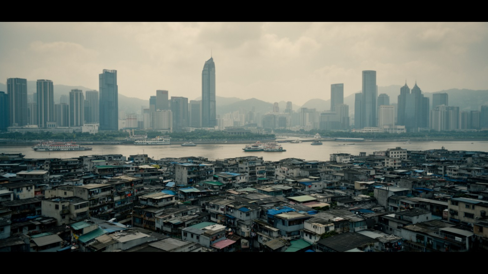
広州を理解するには、貿易都市、製造都市、広東語文化の中心、移民の到着地、水辺の巨大都市という複数の顔を同時に見る必要がある。珠江は景観であるだけでなく、物資と人を運んできた軸であり、広交会は世界市場と工場を結ぶ制度である。飲茶や市場は生活の速度を整え、城中村は低所得の住まいと起業の場所を提供し、地下鉄は広い都市圏の時間をつなぐ。アフリカ商人の街路、旧市街の祠堂、珠江新城の高層ビル、郊外の工場、豪雨の日の排水は、どれも広州の一部である。経済の強さだけを見れば、都市の文化や住宅の問題を見落とす。歴史の情緒だけを見れば、工場、港、移民労働、国際商流の現実が薄くなる。広州は香港や深圳の陰に置かれることもあるが、華南を長く外へ開いてきた行政、交易、言語、食の厚みを持つ都市である。訪れる人には夜景、飲茶、旧市街、展示会が印象に残るが、住民には湿暑、家賃、通勤、教育、職場の変化が毎日の課題になる。広州を読むことは、中国の成長がどのように路地、市場、工場、家族、外国商人、川辺の公共空間へ現れるのかを読むことでもある。都市の強さは、外から来る人が商売と生活の足場を見つけられるかにも表れる。そこに広州らしい開放性がある。南中国の商都としての力は、速く変わる市場と、長く続く生活文化が同じ街で衝突しながら共存する点にある。